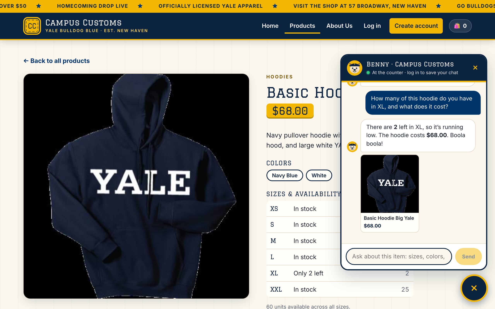
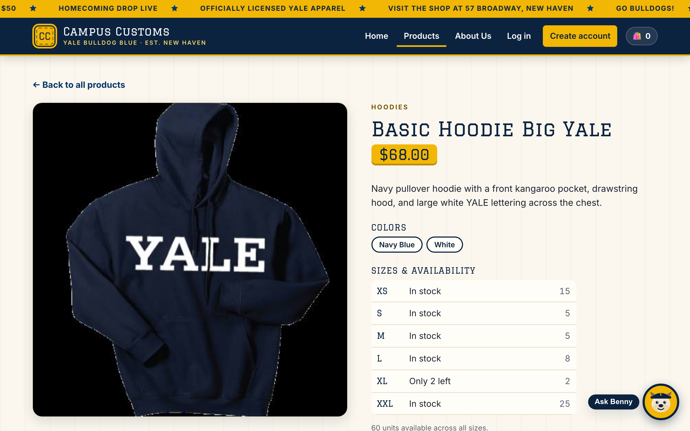
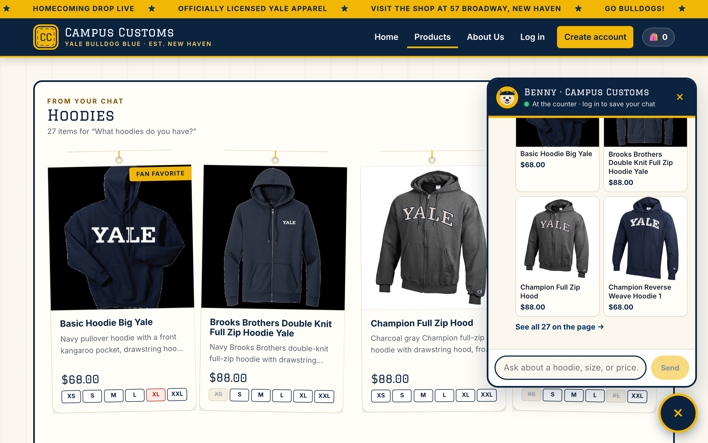
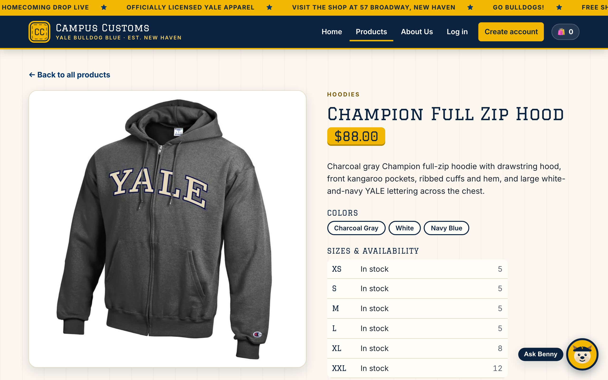
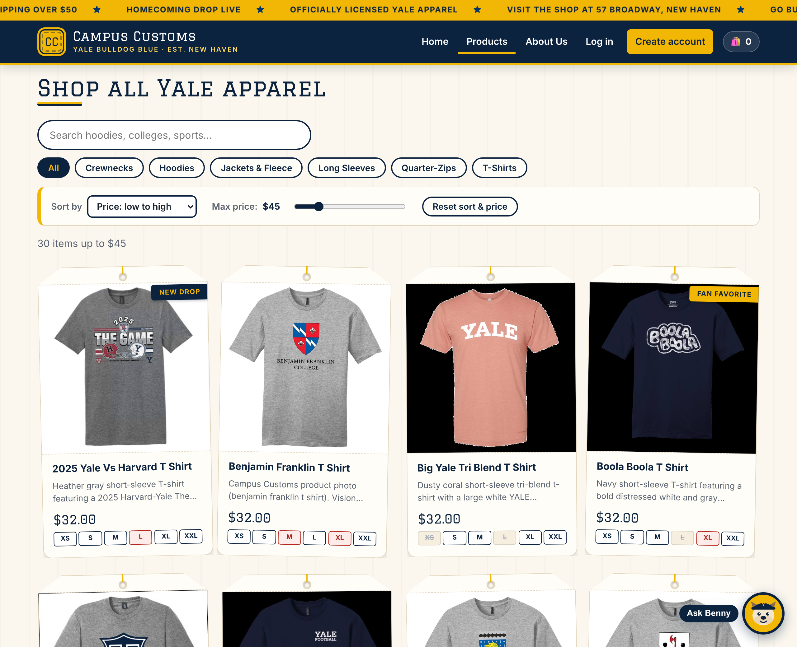

1. Chat checks the inventory level of an item
✔ PassOn the Basic Hoodie Big Yale product page, I asked the chat: How many of this hoodie do you have in XL, and what does it cost?


/api/products/basic-hoodie-big-yale. XL shows "Only 2 left," the same
number the chat gave.
| Size | XS | S | M | L | XL | XXL | Price |
|---|---|---|---|---|---|---|---|
| Quantity | 15 | 5 | 5 | 8 | 2 | 25 | $68.00 |
2. Dynamic search-result cards after a category question
✔ PassOn the Home page, I opened the chat and asked: What hoodies do you have?


3. Usability feature (Problem 9): sort + max-price filter
✔ Pass
On the Products page, I set Sort by → Price: low to high and dragged
Max price to $45 (the URL becomes /products?sort=price-asc&max=45).

Screenshots were taken from the running app with a headless Chromium browser (Playwright) at 2× resolution.
Every number in the captions was checked against data/campus_customs.db.